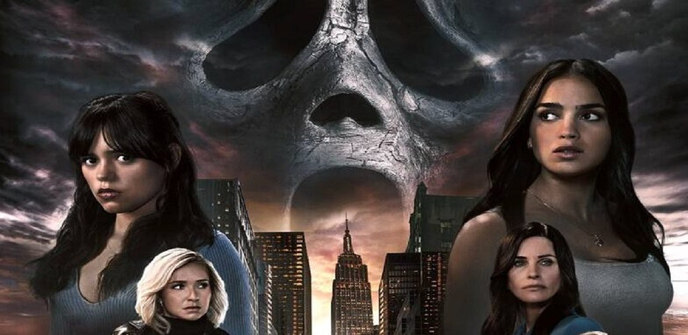

Pânico VI - sinopse
Novo filme da franquia de Ghostface é o mais longo da franquia, será ambientado em Nova York e terá mais Jenna Ortega Após a franquia ter sido revivida com o filme de 2022, Pânico 6 promete trazer ainda mais da história das irmãs Sam (Melissa Barrera) e Tara Carpenter (Jenna Ortega), e seus amigos, fugindo do macabro Ghostface. O filme traz os sobreviventes do último filme tentando recomeçar a vida longe de Woodsboro, em Nova York. Contudo, as coisas não saem como planejado e o assassino Ghostface volta à procura de sangue. Além do retorno de personagens clássicos da franquia como Gale (Courtney Cox) e Kirby (Hayden Panettiere), temos o retorno da queridinha Jenna Ortega e de Melissa Barrera, interpretando as irmãs Tara Carpenter e Sam O próximo filme da franquia de terror estreia no dia 9 de março de 2023 nos cinemas do Brasil. Pânico 6 terá 123 minutos, ou seja, duas horas e três minutos de duração. O fato tornará o filme o mais longo de toda a franquia, superando Pânico 2 cuja duração é exatamente duas horas.